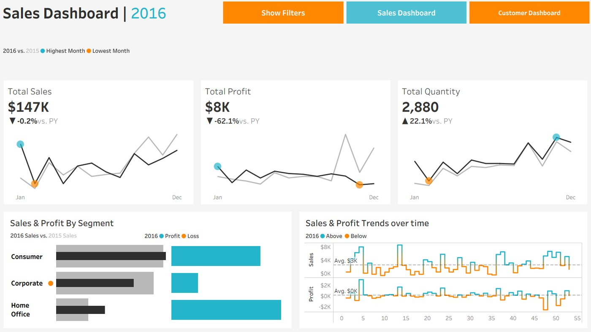
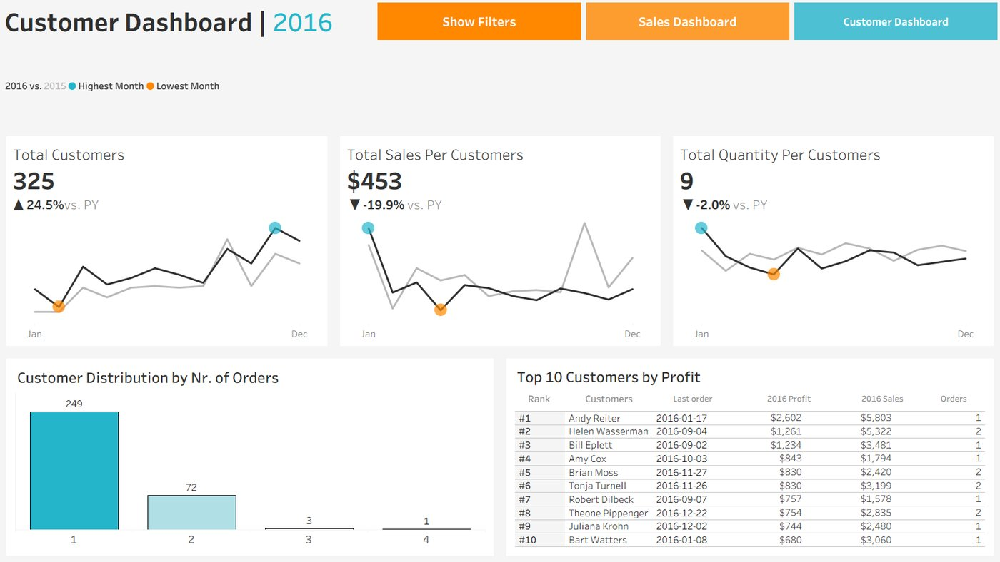
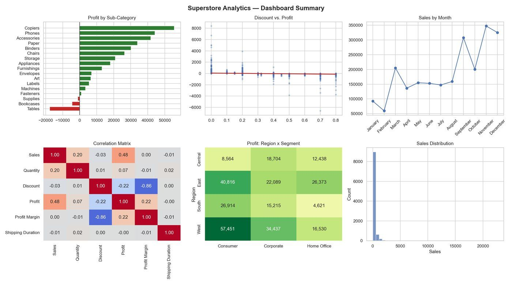
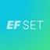

I make messy spreadsheets tell the truth.
Mohamed Atia — Data Analyst trainee with an accounting foundation. I clean, model, and visualize business data in Python, SQL, Power BI, and Tableau, so the numbers point straight to a decision.
I help small businesses and teams turn raw, messy data into decisions they can trust — through Python/SQL data cleaning, statistical analysis, and Power BI/Tableau dashboards.
B1About
I'm an accounting graduate from Alexandria University, now training as a Data Analyst through Egypt's Digital Egypt Pioneers Initiative (DEPI), Round 5, under the Ministry of Communications and Information Technology.
Before I moved into data, I spent four years learning how a business actually works — how revenue gets recognized, where costs hide, and why a balance sheet has to balance. That's the part most analysts skip, and it's the part that makes my analysis useful: I don't just build a dashboard, I understand what the numbers inside it mean for the business behind them.
Today that shows up as Python and SQL for cleaning and modeling data, Power BI and Tableau for turning it into something a non-technical stakeholder can act on in five minutes, not fifty.
Good analysis doesn't start with a chart. It starts with a question worth answering.
B2Skills & tools
Programming & analytics
Python, Pandas, SQL, exploratory data analysis, statistical analysis, data cleaning, feature engineering
BI & visualization
Microsoft Power BI (Power Query, DAX, data modeling), Tableau, data storytelling, KPI reporting
Data engineering
SQL Server, SQL joins, CTEs, stored procedures, views, star schema design, Medallion architecture
Business & AI
Accounting, financial reporting, data governance, generative AI, large language models (LLMs), prompt engineering
Tools & platforms
Git, GitHub, Jupyter Notebook, Microsoft Excel, Microsoft 365, Google Sheets
B3Work experience
Data Analyst Trainee — DEPI Round 5
Jul 2026 – PresentMinistry of Communications and Information Technology, in partnership with Skills Dynamix · Hybrid, Alexandria
- Selected for a national scholarship and professional training track in data analytics.
- Building Python skills for data analysis, including Pandas, data cleaning, EDA, and object-oriented programming.
- Building SQL skills across joins, CTEs, stored procedures, views, and database design.
- Building interactive dashboards and data stories in Tableau and Power BI, including Power Query, data modeling, and DAX.
- Completing six graded mini-projects plus an end-to-end capstone with an executive presentation.
Internship Trainee — CIB Summer Internship Program
Sep – Nov 2024Commercial International Bank (CIB) · Remote
- Completed a structured banking internship spanning five modules: banking operations, ESG, financial literacy, entrepreneurship, and digital transformation.
- Practiced professional workplace communication and active listening while engaging with data-driven business contexts.
B4What I offer
Data cleaning & pipelines
Python · PandasMessy spreadsheets, inconsistent formats, missing values, duplicate rows. I build reusable pipelines that clean your data once and keep it clean, with proper handling for the edge cases that break a one-off script.
Dashboards & reporting
Power BI · TableauDashboards that surface the numbers that actually matter to your business, plus automated KPI reporting so you're not rebuilding the same report by hand every month.
Analysis & insight
SQL · StatisticsAnswering a specific business question, not just describing your data: what's driving profitability, where the trend is heading, and what to do next.
B5Projects
Superstore Sales & Customer Dashboards
Two linked Tableau dashboards that compare each year with the previous one, with KPIs that react to Category and Sub-Category filters. My part of a six-person team project (DEPI Mini Project 3), built on a SQL Server gold layer.


Team project. I built the sales-by-customer dashboards with Ahmed Mahmoud; our team leader designed the database and merged everyone's work.
Read the case study
What I built
- Sales dashboard: sales, profit and quantity with Jan–Dec trend lines and % difference vs the previous year, sales and profit by segment, and weekly trends against an average line.
- Customer dashboard: total customers, sales and quantity per customer, customers by number of orders, and the top 10 customers by profit.
- Teal always means good and orange always means bad, so the dashboards read without a legend.
A problem I solved
The gold layer had no Order ID, so I joined it in from the silver layer on Customer ID. That paired every 2016 sale with all of that customer's orders from every year and inflated the order counts. I took the order date from the same table as the Order ID and counted distinct orders, and the distribution now adds up to the 325 customers of the year.
SQL Data Warehouse & Business Analytics
A retail data warehouse built from scratch in SQL Server on a Medallion Architecture (Bronze → Silver → Gold), modeled as a star schema, with analysis scripts and KPI report views on top. My first SQL project, built for DEPI Mini Project 2.
Read the case study
The challenge
Turn a single flat retail file (Central Superstore) into a proper analytical warehouse: a documented, repeatable load process and a model that business questions can be asked against.
What I built
- Excel → CSV conversion script in Python, then
BULK INSERTinto a raw Bronze layer, with truncate-and-reload stored procedures for Bronze and Silver. - Gold layer as views:
dim_customers,dim_products,dim_order_detailsandfact_sales, with surrogate keys and documented naming conventions. - Data quality checks for each layer, a gold-layer data catalog, and a star schema diagram.
- Exploration and analysis scripts (change over time, cumulative, performance, part-to-whole) plus
report_customersandreport_productsviews covering recency, average order value, segmentation, and lifespan.
What I learned
The source data turned out to be already clean, so Silver stayed close to Bronze and only added a derived total_price column. Checking first and keeping each layer's job honest mattered more than adding transformations for show.
Superstore Retail Analytics
An end-to-end Python pipeline that turned 9,994 raw retail transactions into $284K in identified profit drivers and a pricing recommendation for three loss-making sub-categories.

Read the case study
The challenge
The Sample Superstore dataset arrived with missing values, duplicate rows, inconsistent formatting, and no engineered features — just raw transactions with no clear story yet.
What I built
A chainable OOP pipeline (SuperstoreCleaner, FeatureEngineer) with custom exception handling — cleaning, IQR outlier detection, memory optimization, and engineered fields like Profit Margin and Discount Bucket — followed by correlation and significance testing with scipy.stats.
The result
Discount and profit are significantly negatively correlated (r = -0.22); Tables, Bookcases, and Supplies account for most of the profit loss; West/Consumer is the strongest region-segment pair at $57K profit. Delivered as 11 visualizations, a dashboard, and an automated KPI report via a custom KPIReportGenerator class.
B6Achievements & certifications

EF SET C1 English, EF SETFull list of credentials and certificates on LinkedIn, with badges verified on Credly.
B7Testimonials
This section is still empty — on purpose.
I'd rather leave it blank than fill it with something that isn't real. If we work together, I'll ask if you're willing to leave a few lines here.
B8Let's work together
If you need a data set turned into an actual answer, or a dashboard built and kept up to date, send me a message — I usually reply within a day.
=SUM( your data , my analysis ) → a decision you can trust
- Emailbeshny2003@gmail.com
- Phone+20 105 094 8781
- WhatsAppMessage me directly
- LocationAlexandria, Egypt
- LinkedInlinkedin.com/in/bishnie
- GitHubgithub.com/bshni
- CertificationsLinkedIn
- Credlycredly.com/users/mohamed-ahmed